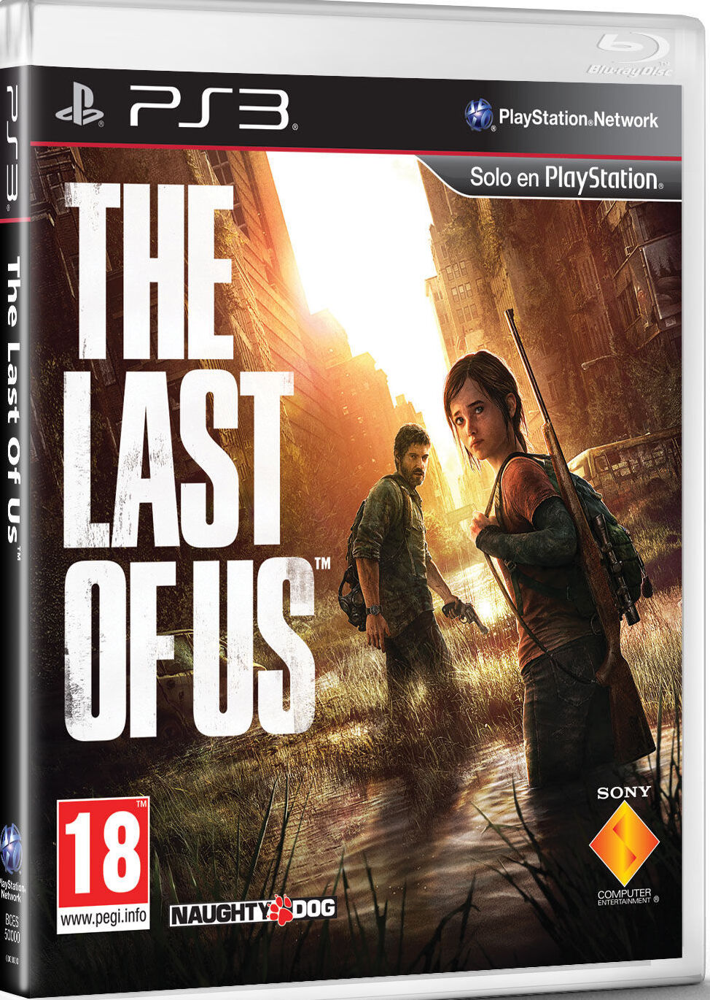

The Last of Us is a third-person action-adventure game developed by Naughty Dog and published by Sony
Computer Entertainment.
It was released for the PlayStation 3 in June 2013 and later remastered for
the PlayStation 4 in July 2014.
The gameplay of The Last of Us is a mix of survival horror, stealth, and action. Players must scavenge
for resources, craft weapons and tools, and navigate through dangerous environments while avoiding or
battling infected and hostile human survivors.
The game is known for its immersive storytelling, which explores themes of loss, morality, and the human
condition. It features a strong cast of characters, with the relationship between Joel and Ellie serving
as the emotional core of the story.
The game is set in a post-apocalyptic world where a fungal infection has turned most of humanity into
zombie-like creatures. Players control Joel, a smuggler tasked with escorting a young girl named Ellie
across the country to a group of resistance fighters known as the Fireflies, who believe she may hold
the key to finding a cure for the infection.
The Last of Us was widely praised by critics and fans for its innovative gameplay, engaging story, and
memorable characters. It won numerous awards and accolades, including several "Game of the Year" awards.
A sequel, The Last of Us Part II, was released in 2020
.png)